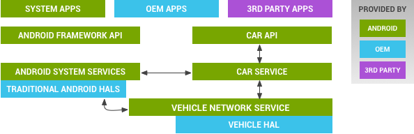
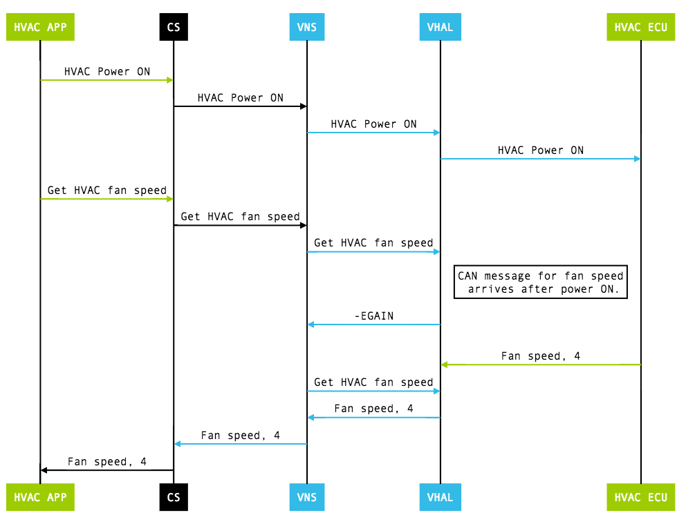
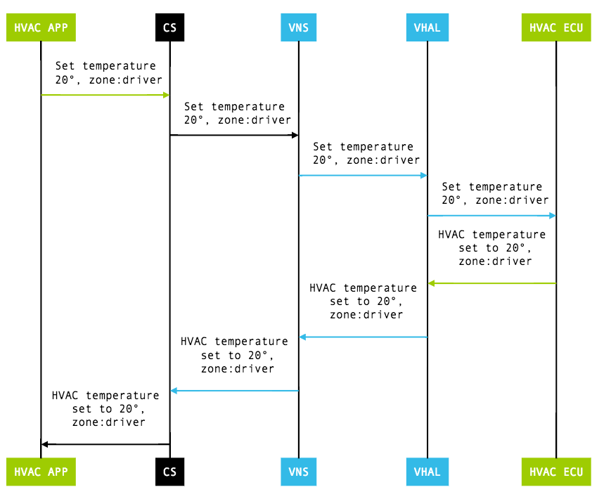

In this document
Many car subsystems interconnect with each other and the in-vehicle infotainment (IVI) system via various bus topologies. The exact bus type and protocols vary widely between manufacturers (and even between different vehicle models of the same brand); examples include Controller Area Network (CAN) bus, Local Interconnect Network (LIN) bus, Media Oriented Systems Transport (MOST), as well as automotive-grade Ethernet and TCP/IP networks such as BroadR-Reach.
Android Automotive has a hardware abstraction layer (HAL) that provides a consistent interface to the Android framework regardless of physical transport layer. This vehicle HAL is the interface for developing Android Automotive implementations.
System integrators can implement a vehicle HAL module by connecting function-specific platform HAL interfaces (e.g. HVAC) with technology-specific network interfaces (e.g. CAN bus). Typical implementations may include a dedicated Microcontroller Unit (MCU) running a proprietary real-time operating system (RTOS) for CAN bus access or similar, which may be connected via a serial link to the CPU running Android Automotive. Instead of a dedicated MCU, it may also be possible to implement the bus access as a virtualized CPU. It is up to each partner to choose the architecture suitable for the hardware as long as the implementation fulfills the interface requirements for the vehicle HAL.
Architecture
The vehicle HAL is the interface definition between the car and the vehicle network service:
Figure 1. Vehicle HAL and Android automotive architecture
- Car API. Contains the APIs such as CarHvacManager,
CarSensorManager, and CarCameraManager. For details on all supported APIs,
refer to
/platform/packages/services/Car/car-lib. - CarService. Located at
/platform/packages/services/Car/. - VehicleNetworkService. Controls vehicle HAL with built-in
security. Access restricted to system components only (non-system components
such as third party apps should use car API instead). OEMs can control access
using
vns_policy.xmlandvendor_vns_policy.xml. Located at/platform/packages/services/Car/vehicle_network_service/; for libraries to access the vehicle network, refer to/platform/packages/services/Car/libvehiclenetwork/. - Vehicle HAL. Interface that defines the properties OEMs can
implement and contains property metadata (for example, whether the property is
an int and which change modes are allowed). Located at
hardware/libhardware/include/hardware/vehicle.h. For a basic reference implementation, refer tohardware/libhardware/modules/vehicle/.
Vehicle properties
The vehicle HAL interface is based on accessing (read, write, subscribe) a property, which is an abstraction for a specific function. Properties can be read-only, write-only (used to pass information to vehicle HAL level), or read and write. Support of most properties is optional.
Each property is uniquely identified by an int32 key and has a predefined
type (value_type):
INT32(and array),INT64,BOOLEAN,FLOAT(and array), string, bytes.- Zoned type has zone in addition to value.
Zone types
The vehicle HAL defines three zone types:
vehicle_zone: Zone based on rows.vehicle_seat: Zone based on seats.vehicle_window: Zone based on windows.
Each zoned property should use pre-defined zone type. If necessary, you can use a custom zone type for each property (for details, see Handling custom properties).
Configuring a property
Use vehicle_prop_config_t to provide configuration information
for each property. Information includes:
access(r, w, rw)change_mode(represents how property is monitored: on change vs continuous)min_value(int32, float, int64),max_value(int32, float, int64)min_sample_rate,max_sample_ratepermission_modelprop(Property ID, int)value_typezone_flags(represents supported zones as bit flags)
In addition, some properties have specific configuration flags to represent capability.
HAL interfaces
The vehicle HAL uses the following interfaces:
vehicle_prop_config_t const *(*list_properties)(..., int* num_properties). List configuration of all properties supported by the vehicle HAL. Only supported properties will be used by vehicle network service.(*get)(..., vehicle_prop_value_t *data). Read the current value of the property. For zoned property, each zone may have different value.(*set)(..., const vehicle_prop_value_t *data). Write a value to property. Result of write is defined per each property.(*subscribe)(..., int32_t prop, float sample_rate, int32_t zones).- Start monitoring property value's change. For zoned property, subscription applies to requested zones. Zones = 0 is used to request all zones supported.
- Vehicle HAL should call separate callback when the property's value changes (=on change) or in const interval (=continuous type).
(*release_memory_from_get)(struct vehicle_hw_device* device, vehicle_prop_value_t *data). Release memory allocated from get call.
The vehicle HAL uses the following callback interfaces:
(*vehicle_event_callback_fn)(const vehicle_prop_value_t *event_data). Notifies vehicle property's value change. Should be done only for subscribed properties.(*vehicle_error_callback_fn)(int32_t error_code, int32_t property, int32_t operation).Return global vehicle HAL level error or error per each property. Global error causes HAL restart, which can lead to restarting other components, including applications.
Handling zone properties
A zoned property is equivalent to a collection of multiple properties where each sub property is accessible by specified zone value.
getcall for zoned property always includes zone in request, so only the current value for the requested zone should be returned.setcall for zoned property always includes zone in request, so only the requested zone should be changed.subscribecall includes flags of all zones subscribed. Events from un-subscribed zones should not be reported.
Get calls
During initialization, the value for the property may not be available yet as
the matching vehicle network message has not yet been received. In such cases,
the get call should return -EAGAIN. Some properties
(such as HVAC) have separate on/off power property. Calling get for
such a property (when powered off) should return a special value
(VEHICLE_INT_OUT_OF_RANGE_OFF/VEHICLE_FLOAT_OUT_OF_RANGE_OFF)
rather than returning an error.
In addition, some properties (such as HVAC temperature) can have a value to indicate it is in max power mode rather than in specific temperature value. In such cases, use special values to represent such state.
- VEHICLE_INT_OUT_OF_RANGE_MAX/MIN
- VEHICLE_FLOAT_OUT_OF_RANGE_MAX/MIN
Example: get HVAC Temperature
Figure 2. Get HVAC temperature (CD = CarService, VNS = VehicleNetworkService, VHAL = Vehicle HAL)
Set calls
A set call is an asynchronous operation involving event
notification after a requested change is made. In a typical operation, a
set call leads to making a change request across vehicle network.
When the change is performed by the electronic control unit (ECU) owning the
property, the updated value is returned through vehicle network and the vehicle
HAL sends an updated value as an event to vehicle network service (VNS).
Some set calls may require initial data to be ready but during
initialization, such data may not be available yet. In such cases, the
set call should return -EAGAIN. Some properties with
separate power on /off should return -ESHUTDOWN when the property
is powered off and set cannot be done.
Until set is made effective, get does not
necessarily return the same value as what is set. The exception is a property
with change mode of VEHICLE_PROP_CHANGE_MODE_ON_SET. This property
notifies change only when it is set by external component outside Android (for
example, clock properties such as VEHICLE_PROPERTY_UNIX_TIME).
Example: set HVAC Temperature
Figure 3. Set HVAC temperature (CD = CarService, VNS = VehicleNetworkService, VHAL = Vehicle HAL)
Handling custom properties
To support partner-specific needs, the vehicle HAL allows custom properties that are restricted to system apps. Use the following guidelines when working with custom properties:
- Key should be in [
VEHICLE_PROPERTY_CUSTOM_START, VEHICLE_PROPERTY_CUSTOM_END] range. Other ranges are reserved for future extension; using such ranges can cause conflicts in future Android releases. - Use only defined
value_type. BYTES type allows passing raw data, so this is enough in most cases. Sending big data frequently through custom properties can slow down the whole vehicle network access, so be careful when you add a big payload. - Add access policy into
vendor_vns_policy.xml(otherwise, all access will be rejected). - Access via
VendorExtensionManager(for Java components) or via Vehicle Network Service API (for native). Do not modify other car APIs as it can lead to compatibility issues in the future.
Handling HVAC properties
You can use the vehicle HAL to control HVAC by setting HVAC-related properties. Most HVAC properties are zoned properties, but a few are non-zoned (global) properties. Example properties defined include:
VEHICLE_PROPERTY_HVAC_TEMPERATURE_SET(set temperature per each zone).VEHICLE_PROPERTY_HVAC_RECIRC_ON(control recirculation per each zone).
For full list of HVAC properties, search for
VEHICLE_PROPERTY_HVAC_* in vehicle.h.
Handling sensor properties
Vehicle HAL sensor properties represent real sensor data or policy information such as driving status. Some sensor information (such as driving status and day/night mode) is accessible by any app without restriction as the data is mandatory to build a safe vehicle application. Other sensor information (such as vehicle speed) is more sensitive and requires specific permissions that users can manage.
Supported sensor properties include:
DRIVING_STATUS(should support). Represents allowed operations in the current driving state. This information is used to block unsafe applications while driving.NIGHT_MODE(should support). Determines day/night mode of display.GEAR_SELECTION/CURRENT_GEAR. Gear selected by driver vs. actual gear.VEHICLE_SPEED. Vehicle speed. Protected with permission.ODOMETER. Current odometer reading. Protected with permission.FUEL_LEVEL. Current fuel level in %.FUEL_LEVEL_LOW. Fuel level is low or not (boolean).
Security
The vehicle HAL supports three levels of security for accessing data:
- System only (controlled by
vns_policy.xml) - Accessible to app with permission (through car service)
- Accessible without permission (through car service)
Direct access to vehicle properties is allowed only to selected system components with vehicle network service acting as the gatekeeper. Most applications go through additional gatekeeping by car service (for example, only system applications can control HVAC as it requires system permission granted only to system apps).
Validation
AOSP includes the following testing resources for use in development:
hardware/libhardware/tests/vehicle/vehicle-hal-tool.c. Command-line native tool to load vehicle HAL and do simple operations. Useful for getting the system up and running in the early stages of development.packages/services/Car/tests/carservice_test/. Contains car service testing with mocked vehicle HAL properties. For each property, expected behavior is implemented in the test. This can be a good starting point to understand expected behavior.hardware/libhardware/modules/vehicle/. A basic reference implementation.